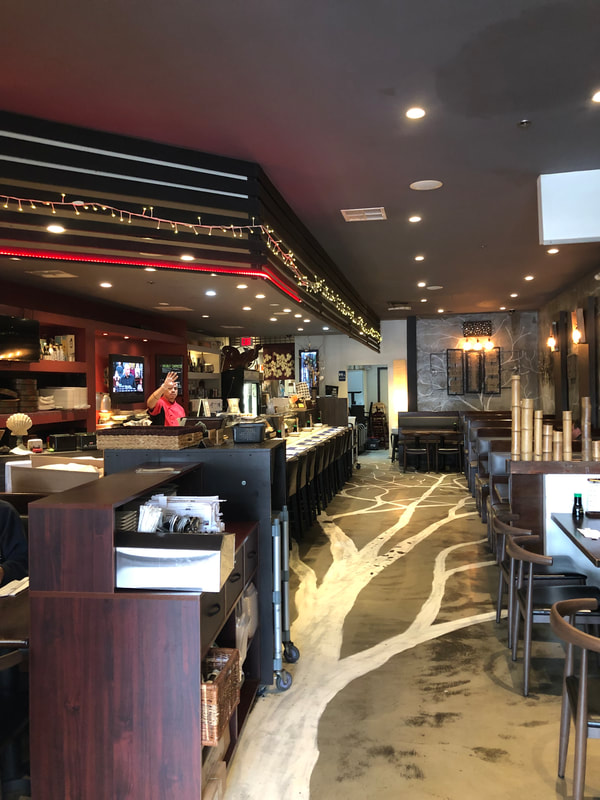
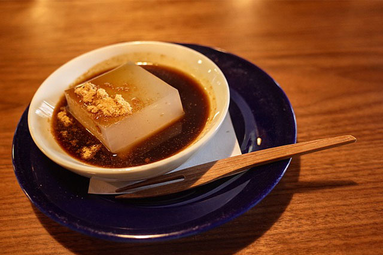
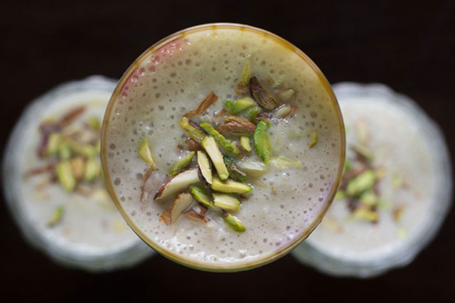

Authenthic
Japanese Cuisine
Dine in or Curbside Pickup
WELCOME
For the past 14 years, Ki Sushi and Sake Bar has been a neighborhood establishment, providing quality authenthic Japanese food in a warm atmosphere.

COMMITMENT
KI Sushi is committed to providing our customers with an excellent dining experience. Each dish on our menu is prepared using only the freshest and highest quality ingredients. atmosphere one can't forget!
NO MSG
We prepare our food using the highest quality ingredients, and no MSG. Our goal is to make our food both delicious and healthy, as if we were cooking for our own family


